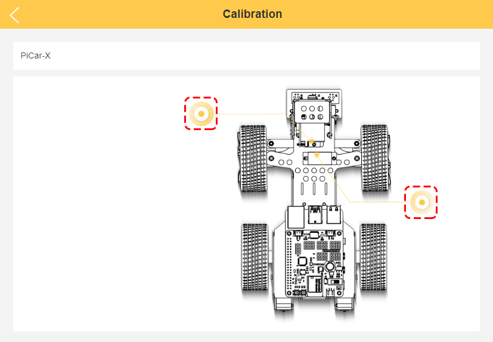
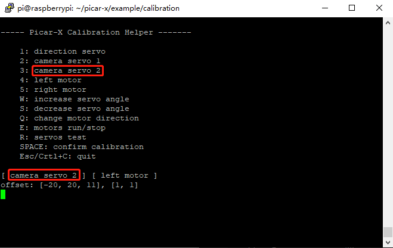

校准 PiCar-X¶
由于 PiCar-X 安装过程中可能出现的偏差或舵机本身的限制，某些舵机角度可能会略微倾斜，因此您可以对其进行校准。
当然，如果您认为组装是完美的并且不需要校准，您可以跳过这一章。
运行校准程序 calibration.py
cd /home/pi/picar-x/examples/calibration
sudo python3 calibration.py
运行上述代码后，您会看到终端显示如下界面。

R键用于测试控制前轮方向的舵机是否能正常工作，有没有损坏。
按数字键1可以选择前轮舵机，然后按W/S键可以慢慢地校准前轮的方向，让其看起来尽可能正向前方，而不左右偏斜。

按数字键2可以选择摄像头左右方向的舵机，然后按W/S键可以慢慢地校准摄像头左右的方向，让其正视前方不左右倾斜。
按数字键3可以选择摄像头上下方向的舵机，然后按W/S键可以慢慢地校准摄像头上下的方向，让其平视前方不上下倾斜。
由于安装时可能失误将后轮电机的线接反，导致其不能正常前进，可以按E测试小车是否能正常前进。 若后轮的旋转方向反了，则可以按数字键4和5分别选择后轮左右两个马达，然后按Q键来校准其旋转方向。

当校准完毕之后按下空格键保存校准参数，会有提示输入 y 确认，然后按 esc 退出程序完成校准。